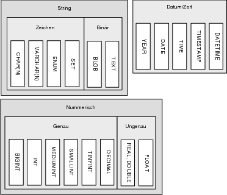

|
|
|
Anhand dieser Auflistung fällt allerdings auch auf, dass das Hauptanwendungsgebiet von MySQL eindeutig das Internet und somit auch ied Internet-Programmierung ist.  12.4.2 Schnittstellen von MySQL
|
|||||||||||||||||||||||||||||||||||||||||||||||||||||||||||||||||||||||||||||||||||||||||||||||||||||||||||||||||||||||||||||||||||||||||||||||||||||||||||||||||||||||||||||||||||||||||||||||||||||||||||||||||||||||||||||||||||||||||||||||||||||||||||||||||||||||||||||||||||||||||||||||||||||||||||||||||||||||||||||||||||||||||||||||||||||||||||||||||||||||||||||||||||||||||||||||||||||||||||||||||||||||||||||||||||||||||||||||||||||||||||||||||||||||||||||||||||||||||||||||||||||
|
Hinweis Natürlich finden Sie auch hierzu wieder Info-Material auf der Buch-CD. |
Nachdem Sie MySQL erfolgreich installiert haben, können Sie den Server starten. Sollte dies bei Ihnen nicht funktionieren, dann sollten Sie sich die mitgelieferte Dokumentation durchlesen oder der Webseite von MySQL einen Besuch abstatten. Gewöhnlich benötigen Sie dazu Superuser-Rechte.
Unter der Red Hat- und Debian-Distribution lässt sich der MySQL-Server wie folgt starten:
$ /etc/rc.d/init.d/mysql start Starting service MySQL
Ebenso einfach lässt sich der Server unter Red Hat auch wieder stoppen:
$ /etc/rc.d/init.d/mysql stop Starting service MySQL
Bei der SUSE-Distribution kann der MySQL-Server auch mit folgendem Befehl vom Superuser gestartet bzw. gestoppt werden:
$ rcmysql start Starting service MySQL done $ rcmysql stop Shutting down service mysql done
Mit dem Befehl restart am Ende, anstatt start oder stop, können Sie den MySQL-Server neu starten lassen.
Wollen Sie, dass der MySQL-Server bei jedem Start von Linux aktiv ist, können Sie bei Red Hat einen Eintrag in chkconfig und bei SUSE einen in rc.config oder in /etc/init.d/mysql machen. Darauf soll aber hier nicht genauer eingegangen werden.
Mit MySQL haben Sie auch die Möglichkeit, mit der Konfigurationsdatei my.cnf verschiedene Einstellungen vorzunehmen. Diese Konfiguration kann dabei auf der System-, Datenbank- oder der Benutzerebene vorgenommen werden. Sie finden folgende drei Konfigurationsdateien für den MySQL-Server:
| Systemweite Einstellungen in /etc/my.cnf |
| Globale Servereinstellungen in <Datenverzeichnis>/my.cnf – Da auf einem Rechner mehrere MySQL-Server (in verschiedenen Datenverzeichnissen) ausgeführt werden können, sind hiermit Einstellungen für diese Server möglich. Dies eignet sich bei mehreren Server besser als /etc/my.cnf, da hierbei die Einstellungen für alle Server des Systems gelten würden. Die Konfigurationsdatei kann dem Server beim Start übergeben werden. |
| Benutzerspezifische Einstellungen in ~./my.cnf – Diese Konfigurationsdatei wird verwendet, wenn der MySQL-Server unter einer abweichenden Einstellung arbeiten soll. |
Die Konfigurationsdatei ist eine gewöhnliche Textdatei und lässt sich mit jedem ASCII-fähigen Editor betrachten und mit entsprechenden Rechten modifizieren. Da Sie den Server soeben als Superuser starten mussten, können Sie sich gleich als solcher die Konfigurationsdatei in der Kommandozeile ansehen:
$ less -MSi /etc/my.cnf
Die Ausgabe kann nun von System zu System variieren. Die Syntax der Konfigurationsdatei können Sie der Online-Dokumentation entnehmen. Folgende globale Einstellungen sind allerdings gewöhnlich immer anzutreffen:
[client] #password = your_password #user = username port = 3306 socket = /var/lib/mysql/mysql.sock # Here follows entries for some specific programs # The MySQL server [mysqld] port = 3306 socket = /var/lib/mysql/mysql.sock
Alle Zeilen, die mit # beginnen, sind Kommentare und werden vom MySQL-Server ignoriert. Anschließend folgt in den eckigen Klammern das Programm, wofür die nachfolgenden Parameter gelten. Außer mysqld (der MySQL-Server (Dämon)) können noch weitere MySQL-Clientprogramme wie u. a. mysql, mysqladmin, mysqldump usw. verwendet werden. Anschließend werden die einzelnen Einstellungen für das Programm mit der Angabe
option = wert (bspw. port = 3306)
eingestellt. Selbiges gilt für die Einstellung von Variablen mit
set-variable = Variablenbezeichnung=Wert
Zum Beispiel:
# The MySQL server [mysqld] port = 3306 socket = /var/lib/mysql/mysql.sock set-variable = max_connections = 200
Hier wurde dem MySQL-Server die Anzahl der maximalen gleichzeitigen Verbindungen (max_connections) übergeben. Eine Konfiguration einzustellen ist somit recht einfach. Es muss lediglich das Programm in eckigen Klammern gefolgt von den einzelnen Parametern angegeben werden.
|
Tipp Um die Geschwindigkeit Ihrer Datenbank ein wenig zu optimieren, können Sie die Variable query_cache_size, ein Speicher zur Zwischenspeicherung, verwenden. Setzen Sie diese Variable einfach beim Programm [mysqld] auf einen bestimmten Wert, je nachdem, wie groß dieser Cache sein soll. Um den Query-Cache zu aktivieren, müssen Sie außerdem die Variable query_cache_startup_type aktivieren. |
Es gibt zwar mittlerweile eine umfangreiche Auswahl an grafischen Tools und Programmen für Administrationsaufgaben von MySQL, aber in vielen Fällen reichen die Kommandozeilenwerkzeuge von MySQL aus. Am häufigsten sind dabei die mysql-Clientanwendung (auch gerne mysql-Shell genannt; offiziell MySQL Monitor) und phpMyAdmin (grafischer Client für den Browser) anzutreffen.
Der Client (oder besser die SQL-Shell) mysql ist im Standardumfang von MySQL enthalten und quasi das wichtigste Werkzeug, um mit MySQL in der Kommandozeile zu arbeiten. Die MySQL-Shell soll jetzt aufgerufen werden. Starten Sie hierfür, falls noch nicht geschehen, den MySQL-Server. Da das Werkzeug mysql eine gewaltige Anzahl von Optionen besitzt, können Sie es auch mit dem Flag –help aufrufen, um sich einen Überblick zu verschaffen.
$ mysql -uroot –hlocalhost -p Welcome to the MySQL monitor. Commands end with ; or \g. Your MySQL connection id is 2 to server version: 3.23.55-log Type 'help;' or '\h' for help. Type '\c' to clear the buffer.
Sie starten hierbei die MySQL-Shell mit dem User root und dem Host localhost. Sie können sich von Haus aus als Benutzer root mit dem MySQL-Server verbinden. Sollte eigentlich auch logisch sein, denn sonst hätten Sie keinen Zugriff auf den MySQL-Server. Aus Sicherheitsgründen sollten Sie dies natürlich ändern. Verlassen Sie die MySQL-Shell erst wieder mit dem Aufruf von quit (oder auch mit exit (ein Alias für quit)).
mysql> quit Bye
Natürlich können Sie auf die MySQL-Shell, wie es sich für eine Shell eben gehört, auch im Batch-Modus zugreifen. Z. B. können Sie die mysql-Anweisungen in ein Skript schreiben und mit folgendem Befehl ausführen lassen:
$ mysql -u root -h localhost -p datenbank < skript.sql
Damit werden alle Befehle, die Sie in skript.sql angegeben haben, ausgeführt. Weiterhin können Sie die Ausgabe auch in eine andere Datei umleiten lassen:
$ mysql -u root -h localhost -p datenbank < skript.sql > \ > ausgabe.txt
Der Batch-Modus ist sehr gut für Cron-Jobs geeignet, um regelmäßige Aufgaben (wie z. B. Backups) zu automatisieren.
Damit jetzt nicht jedermann auf die Datenbanken zugreifen kann, sollten Sie wenigstens ein Passwort vergeben. Da ich davon ausgehe, dass Sie der Chef am Rechner sind, soll hierfür ein Passwort für Sie eingerichtet werden. Dies können Sie recht komfortabel mit dem Client mysqladmin realisieren.
$ mysqladmin -uroot password juergen
Hiermit haben Sie sich als root das Passwort juergen gegeben. Sie sollten sich natürlich ein anderes Passwort einfallen lassen. Wollen Sie das Passwort wieder ändern, können Sie folgendermaßen vorgehen:
$ mysqladmin -uroot -pjuergen password k4p6m3o3
|
Hinweis Man kann dies auch ohne -p machen, wodurch man interaktiv gefragt wird. Das ist auch vorteilhafter, weil man sonst über »ps aufwwx« die Passwörter sehen kann. |
Es empfiehlt sich allerdings, auf Produktivsystemen nicht diesen Befehl abzusetzen. Falls es jemand schafft, root-Rechte auf dem Server zu erlangen, kann er somit das Hauptpasswort für die DB aus der /root/.bash_history auslesen (erste Anlaufstelle für Cracker). Es ist sinnvoller, das Passwort im mysql-Monitor mit den Grant-Funktionen zu ändern. Oder mit einem
mysql > USE mysql;
mysql > UPDATE user SET Password=PASSWORD('neues_password')
> WHERE User='root';
und danach mit
mysql > FLUSH PRIVILEGES;
die User-Datenbank neu einzulesen.
Somit haben Sie das Passwort juergen umgeändert zu k4p6m3o3. Wenn Sie sich jetzt wieder in die MySQL-Shell einloggen wollen, müssen Sie das Passwort mit angeben:
$ mysql -uroot -hlocalhost -pk4p6m3o3 Welcome to the MySQL monitor. Commands end with ; or \g. Your MySQL connection id is 9 to server version: 3.23.55-log Type 'help;' or '\h' for help. Type '\c' to clear the buffer. mysql> exit Bye
Zur Verwaltung des Zugriffs der verschiedenen Anwender auf die Datenbank verwendet MySQL (wenn wundert‘s) auch eine Datenbank mit entsprechendem Namen – mysql. Sie sollten daher immer darauf achten, dass Sie für diese Datenbank entsprechende Rechte vergeben haben (Schreibschutz). Denn was hilft die Verteilung von Zugriffsrechten zu Datenbanken, einzelnen Tabellen oder einzelnen Spalten, wenn sich der Anwender die Rechte selbst vergeben kann. Neue Benutzer können Sie mit dem SQL-Befehl GRANT hinzufügen und mit REVOKE wieder entfernen. Hierfür sei allerdings die Online-Dokumentation empfohlen, da hierauf das Buch nicht eingeht.
Weitere, gerne verwendete Aktionen, die mit mysqladmin durchgeführt werden, sind das Überwachen des Serverzustands. Hierzu können Sie die Optionen status und extended-status verwenden:
$ mysqladmin -uroot -pk4p6m3o3 status
Uptime: 22476 Threads: 1 Questions: 41 Slow queries: 0 Opens: 12 Flush tables: 1
Open tables: 6 Queries per second avg: 0.002
$ mysqladmin -uroot -pk4p6m3o3 extended-status
+--------------------------+-------+
| Variable_name | Value |
+--------------------------+-------+
| Aborted_clients | 0 |
| Aborted_connects | 7 |
| Bytes_received | 1361 |
| Bytes_sent | 4586 |
| Com_admin_commands | 0 |
...
[schnipp]
...
| Threads_created | 21 |
| Threads_connected | 1 |
| Threads_running | 1 |
| Uptime | 22488 |
+--------------------------+-------+
Einige weitere wichtige Information erhalten Sie mit processlist. Damit erfahren Sie, wo der Server seine meiste Zeit verbringt oder gar vergeudet:
$ mysqladmin -uroot -pk4p6m3o3 processlist +--+----+---------+--+-------+----+-----+------------------+ |Id|User|Host |db|Command|Time|State| Info | +--+----+---------+--+-------+----+-----+------------------+ |22|root|localhost| |Query |0 | | show processlist | +--+----+---------+--+-------+----+-----+------------------+
Mehr zu mysqladmin erfahren Sie außerdem mit der Option –help.
Mit dem Programm mysqlshow können Sie sich Informationen über eine Datenbank, Tabelle, Spalten oder Indizes ansehen. So können Sie sich mit folgender Eingabe die Passwortdatei des MySQL-Servers, in der die User eingetragen werden, ausgeben lassen:
$ mysqlshow -uroot -pk4p6m3o3 -hlocalhost mysql user
Die Syntax dazu lautet:
mysqlshow [OPTIONEN] [Datenbank [Tabelle [Spalte] ] ]
Mit dem Programm mysqldump erzeugen Sie eine komplette Kopie Ihrer Datenbank oder auch Teile davon. Diese Datei enthält dann sämtliche Befehle, die Sie zur Wiederherstellung Ihrer Datenbank benötigen, wenn der Fall eintreffen sollte. Bei der Kopie handelt es sich um eine im ASCII-Text gespeicherte Datei mit vollständiger SQL-Syntax. Auch ich habe das Thema »Backup« von MySQL selten beachtet, bis ich eines Besseren belehrt wurde und ein paar Tage Arbeit weg waren. Beispiel eines solchen Dumps:
$ mysqldump -uroot -pk4p6m3o3 -hlocalhost datenbankname > \ backup_datenbankname.sql
Hiermit wird z. B. ein Dump von der Datenbank datenbankname gemacht. Die Ausgabe wird in die Datei backup_datenbankname.sql umgeleitet, worin sich jetzt ein komplettes Backup von datenbankname befindet. Wiederherstellen können Sie diese Sicherung ganz einfach mit:
$ mysql -uroot -pk4p6m3o3 -hlocalhost datenbankname < \ backup_datenbankname.sql
Alle Aufgaben lassen sich mit den mitgelieferten Mitteln von MySQL sehr effektiv realisieren. Aber häufig fehlt einem bei etwas größeren Projekten der Überblick zu den Datenbanken, Tabellen, Spalten und den Daten selbst. Hier kann man sich mit grafischen MySQL-Clients behelfen. Meistens handelt es sich dabei einfach um Frontends zu den Kommandozeilenwerkzeugen.
phpMyAdmin dürfte wohl der bekannteste und meistverwendete Vertreter der grafischen Clients zu MySQL sein. Dabei kommt dieser Client ganz ohne Installation von Software aus. phpMyAdmin benötigt lediglich einen Server, auf dem es möglich ist, PHP-Skripte auszuführen. Meistens findet man phpMyAdmin bei den Internet Service Providern unter dem Einsatz von LAMP (Linux, Apache, MySQL, PHP/Perl). Sofern Sie z. B. Ihre Webseite auf einem Internet Service Provider haben, ist dies häufig die einzige Möglichkeit, direkt auf die einzelnen Tabellen, Zeilen, Spalten und Daten zuzugreifen. Denn nicht jeder ISP bietet einen Kommandozeilenzugang via SSH (Secure Shell). Allerdings bedarf es bei phpMyAdmin der gleichen Kenntnisse wie bei der Verwendung der MySQL-Shell.
MySQLCC steht für MySQL Control Center und ist seit Mitte 2003 als installierbare Software verfügbar. Damit lassen sich dieselben Arbeiten wie bei der MySQL-Shell oder dem grafischen Frontend phpMyAdmin durchführen. MySQLCC ist kostenlos und steht unter GNU GPL-Lizenz.
Unter dem KDE-Desktop stehen Ihnen gleich zwei hervorragende grafische MySQL-Clients zur Verfügung, zum einen Knoda, den der Autor des Buchs gerne verwendet, und KSQL. Beide Clients bieten eine umfangreiche Funktionspalette, wobei es mit beiden Clients auch möglich ist, mit anderen Datenbanken als MySQL eine Verbindung aufzubauen. Ein weiteres interessantes Feature ist u. a. der Export von HTML und XML.
Sofern Sie noch keine MySQL-Kenntnisse besitzen, folgt hier ein kleiner Crashkurs zu MySQL mit einigen grundlegenden Befehlen. Diese Einführung erhebt keinerlei Anspruch, eine komplette Einführung in MySQL zu sein. Trotz eines gewissen Umfangs entspricht dieser Crashkurs aus der Sicht des Autors nicht mehr als dem berühmten Tropfen auf dem heißen Stein. Wenn Sie der Datenbank MySQL mächtig sind, können Sie diesen Abschnitt auch ein wenig überfliegen.
Um mit Datenbanken zu arbeiten, sind mehrere Schritte nötig. Logischerweise muss zuerst eine Datenbank angelegt werden, anschließend wird eine Tabelle benötigt, worin die Daten gespeichert werden. Hierzu ein schematischer Ablauf vom Anlegen der Datenbank bis zum Ausgeben von Daten:
|
Abbildung 12.1 Schematischer Ablauf vom Anlegen der DB bis zur Ausgabe |
Um diese Schritte in MySQL zu realisieren, benötigen Sie Kenntnisse zu den MySQL-Befehlen, die Sie in den folgenden Kapiteln näher kennen lernen werden. Ich werde Ihnen diese Befehle anhand der MySQL-Shell (dem mysql-Client) näher bringen. Sie können, wenn Sie wollen, natürlich auch eines der grafischen Clientprogramme verwenden, um die SQL-Befehle auszuführen. Es wird empfohlen, die einzelnen Schritte, wie sie auf den folgenden Seiten dargestellt werden, auch selbst in der Praxis zu testen, um das Beschriebene nachvollziehen zu können.
Aufgeteilt werden die Befehle in zwei Kategorien – die DDL- und die DML-Befehle:
| DDL (Datendefinitionssprache) – Die Datendefinitionssprache wird genutzt, um die Struktur der abzuspeichernden Datenobjekte zu beschreiben – sprich: Datenbanken oder Tabellen anlegen, verändern, umbenennen usw. Ebenfalls gehört die Administration (Benutzer anlegen, Rechte verteilen ...) zum Bereich der DDL. |
| DML (Datenmanipulationssprache) – Die Datenmanipulationssprache dient zum Einfügen, Ändern, Löschen und Lesen des Inhalts aller Datenbankobjekte. Dabei wird zwischen der Anfragesprache (Query Language) und der eigentlichen Datenmanipulationssprache, mit der abgespeicherte Datensätze manipuliert werden können, unterschieden. |
Mit einem Satz: DDL beschreibt die Struktur und DML den Inhalt dieser Struktur.
Wie in C und in vielen anderen Sprachen gibt es auch in MySQL Datentypen. Datentypen sind die kleinste Einheit, die mit SQL-Befehlen manipuliert werden können. Die Datentypen werden dabei als Spaltenwert (Attribut) einer Tabelle zwingend verwendet. Und, wie ebenfalls in vielen anderen Sprachen, gibt es hierbei unterschiedliche Datentypen. Zum Glück sind Sie ja bereits (mindestens) einer Sprache mächtig, somit kann ich mir einige Erklärungen zu den Datentypen ersparen. Aufgeteilt werden die Datentypen in folgende Kategorien:
| Zeichen und Zeichenketten (einzelne Zeichen, Strings) |
| Nummerische Werte (Zahlen (Ganzzahlen, Gleitpunktzahlen)) |
| Datums- und Zeitdatentypen |
Zeichen(-ketten) und nummerische Werte als Datentypen sollten bei Ihnen eigentlich keine Wimper mehr zucken lassen. Aber anders als in vielen Programmiersprachen bietet MySQL auch einige Datentypen für Datums- und Zeitangaben.
Logischerweise müssen Sie sich auch bei MySQL Gedanken über den Sinn eines Datentyps machen. Zu klein gewählte Datentypen können bei Überschreitung der Typengrenze zur falschen Darstellung führen, und zu groß gewählte Datentypen verschwenden nur unnötig Platz und machen zudem noch die Datenbank erheblich langsamer.
In der folgenden Abbildung finden Sie einen kurzen Überblick zu den gängigsten Datentypen in MySQL:
|
 Abbildung 12.2 Datentypen von MySQL im Überblick |
Jetzt noch eine genauere Zusammenfassung zu den einzelnen Datentypen in MySQL:
| Datentyp | Bedeutung | Bereich | Speicherbedarf |
| TINYINT | sehr kleine Ganzzahl | -128 bis 127 (0 bis 255) | 1 Byte |
| SMALLINT | kleine Ganzzahl | -32768 bis 32767 (0 bis 65535) | 2 Byte |
| MEDIUMINT | mittelgroße Ganzzahl | -8388608 bis 8388607 (0 bis 16777215) | 3 Byte |
| INT | Ganzzahl (Standard) | -2147283648 bis 2147283647 (0 bis 4294967295) | 4 Byte |
| BIGINT | große Ganzzahl | -9223372036854775808 +9223372036854775807 (0 bis 18446744073709551615) | 8 Byte |
| FLOAT | Fließkommazahl, einfache Genauigkeit | -3,40282346638 bis -1,17549435138 , 0 und 1,17549435138 bis 3,40282346638 | 4 Byte |
| DOUBLE | Fließkommazahl, doppelte Genauigkeit | ~ -1,798308 bis ~ -2,225– 308 , 0 und ~ 2,225– 308 bis ~ 1,798308 | 8 Byte |
| DECIMAL(G,N) | Fließkommazahl derLänge G mit n Nachkommastellen | G+2 Byte |
| Datentyp | Bedeutung | Bereich | Format | Speicherbedarf |
| DATE | Datum | 1.1.1000 bis 31.12.9999 | YYYY-MM-DD | 3 Byte |
| DATETIME | Datum und Uhrzeit | 1.1.1000, 0:00:00 Uhr, bis 31.12.9999, 23:59:59 | YYYY-MM-DD hh:mm:ss | 8 Byte |
| TIMESTAMP | UNIX-Zeit | 1.1.1970 bis 19.01.2038 | 4 Byte | |
| TIME | Uhrzeit | hh:mm:ss | 3 Byte | |
| YEAR | Jahreszahl | 1901 bis 2155 | 1 Byte |
| Datentyp | Bedeutung | Länge | Speicherbedarf |
| CHAR(G) | Zeichenkette mit fester Größe G | max. 255 Zeichen | Größe G Byte |
| VARCHAR(G) | Zeichenkette mit variabler Größe G | max. 255 Zeichen | Größe G Byte |
| TINYTEXT, TINYBLOB | Sehr kleine Zeichenkette | max. 255 Byte | 2E8 – 1 Byte |
| TEXT, BLOB | Kleine Zeichenkette | max. 65535 Byte | 2E16 - 1 Byte |
| MEDIUMTEXT, MEDIUMBLOB | Mittelgroße Zeichenkette | max. 16777215 Byte | 2E24 - 1 Byte |
| LONGTEXT, LONGBLOB | Große Zeichenkette | max. 4294967295 Byte | 2E32 - 1 Byte |
| ENUM | Auflistung | Auswahl nur eines Feldes | 65535 Elemente |
| SET | Auflistung | Mehrfachauswahl | 64 Elemente |
(»BLOB«: Abk. f. »Binary Large Object«, z. B. Fotos oder Musikdateien)
|
Hinweis In MySQL ist es übrigens egal, ob Sie Groß- oder Kleinschreibung verwenden. Es hat sich aber etabliert, die Statements großzuschreiben und die Feldnamen klein. Dadurch wird eine bessere Übersichtlichkeit erreicht. |
Jetzt soll mit den SQL-Befehlen begonnen werden. Als Beispiel wird eine einfache Datenbank verwendet, womit sich Adressen verwalten lassen – ist zwar ein wenig öde, aber zum Lernen genau das Richtige. Sie können (sollten) dabei die einzelnen SQL-Befehle nach Herzenslust testen.
|
Hinweis Wie in C müssen Sie das Ende eines MySQL-Befehls auf dem Monitor mit einem Semikolon (oder aber auch mit dem Zeichen \g) abschließen. |
Der erste Schritt ist das Anlegen einer neuen Datenbank. Starten Sie die MySQL-Shell, und gehen Sie dabei wie folgt vor:
$ mysql -uroot -hlocalhost -pk4p6m3o3 Welcome to the MySQL monitor. Commands end with ; or \g. Your MySQL connection id is 1 to server version: 3.23.55-log Type 'help;' or '\h' for help. Type '\c' to clear the buffer. mysql> CREATE DATABASE adressen; Query OK, 1 row affected (0.06 sec)
Mit dem Befehl CREATE DATABASE legen Sie eine neue Datenbank ohne Tabelle an. Idealerweise überprüft man, ob nicht schon eine Datenbank mit dem Namen existiert. Dies können Sie folgendermaßen abfragen:
mysql> CREATE DATABASE IF NOT EXISTS adressen; Query OK, 0 rows affected (0.00 sec)
Mit IF NOT EXISTS wird überprüft, ob eine Datenbank mit dem Namen bereits existiert. Bedenken Sie aber auch, dass hierbei die Fehlermeldung (Database exists) nicht ausgegeben wird. Die Länge des Namens darf max. 64 Zeichen betragen – als Zeichen sind alle erlaubt, die auch für die Angabe von Dateien erlaubt sind.
Wollen Sie sich jetzt einen Überblick über die vorhandenen Datenbanken auf Ihrem System machen, steht Ihnen folgender Befehl zur Verfügung:
mysql> SHOW DATABASES; +-------------+ | Database | +-------------+ | adressen | | dvd_archiv | | mail_archiv | | mein_test | | mysql | | test | +-------------+ 6 rows in set (0.26 sec)
Wenn Sie auf eine Datenbank zugreifen wollen, müssen Sie die gewünschte Datenbank erst auswählen. Auch dieser Vorgang lässt sich recht einfach realisieren:
mysql> USE adressen; Database changed
Wenn Sie jetzt eine Datenbank wieder löschen wollen, können Sie hierfür den SQL-Befehl DROP DATABASE verwenden:
mysql> DROP DATABASE IF EXISTS adressen; Query OK, 0 rows affected (0.00 sec)
Bitte beachten Sie dabei, dass Sie hiermit die Datenbank mitsamt den Tabellen unwiderruflich löschen.
Hierzu nochmals eine Übersicht zu den SQL-Befehlen zum Anlegen, Auswählen und Löschen einer Datenbank:
| Befehl | Bedeutung |
| CREATE DATABASE <datenbankname>; | Legt eine neue Datenbank an. |
| CREATE DATABASE IF NOT EXISTS <datenbankname>; | Legt eine neue Datenbank an, wenn diese noch nicht existiert. |
| DROP DATABASE <datenbankname>; | Löscht eine Datenbank. |
| SHOW DATABASES; | Zeigt alle Datenbanken auf dem System an. |
| USE <datenbankname>; | Wählt eine Datenbank aus. |
| mysqladmin CREATE <datenbankname> | Legt eine Datenbank mit dem Kommandozeilenwerkzeug mysqladmin an. |
| mysqladmin DROP <datenbankname> | Löscht eine Datenbank mit dem Kommandozeilenwerkzeug mysqladmin. |
Nach dem Anlegen einer Datenbank können Sie die Tabellenstruktur festlegen. Neue Tabellen lassen sich recht einfach mit dem SQL-Befehl CREATE TABLE erzeugen. Als Parameter müssen Sie dabei Datenbankfelder und die Definitionen der Datentypen angeben. Für Sie als C-Programmierer sieht dies ähnlich aus wie bei der Definition eines Funktionsprototypen. Ein Unterschied in der Definition, im Gegensatz zu C, liegt darin, dass der Variablennamen vor dem Datentyp steht. Hierzu das Anlegen einer einfachen Tabellenstruktur:
mysql> CREATE DATABASE IF NOT EXISTS adressen; Query OK, 1 row affected (0.00 sec) mysql> CREATE TABLE privat( -> vname VARCHAR(25), -> nname VARCHAR(25), -> plz INT, -> ort VARCHAR(100), -> strasse VARCHAR(100), -> hausnr INT -> ); Query OK, 0 rows affected (0.25 sec)
Mehr ist nicht nötig, um eine einfache Tabelle zu definieren. Im Beispiel haben Sie auch gesehen, dass es ohne Probleme möglich ist, SQL-Befehle über mehrere Zeilen zu schreiben. Entscheidend ist letztendlich das Semikolon am Ende einer SQL-Anweisung.
|
Hinweis Die Zeichenfolge »->« gehört übrigens zur Eingabeaufforderung des MySQL-Monitors und nicht zum Befehl! Anders als in einer Shell kann sich hierbei ein Befehl über mehrere Zeilen erstrecken, wobei allerdings dann auch nicht der ganze Befehl in die History übernommen wird. |
Die allgemeine Syntax zur Erstellung einer neuen Tabelle sieht wie folgt aus:
CREATE TABLE <tabellennamen> ( <spaltennamen> <datentype>, ... );
Häufig wird die Frage gestellt, wie man eine neue Tabelle mit dem Inhalt einer anderen Tabelle anlegen kann. Dies ist einfacher, als Sie denken:
CREATE TABLE neue_Tabelle SELECT * FROM andere_Tabelle;
Schon finden Sie in neue_Tabelle dieselben Tabellen und denselben Inhalt vor wie bei andere_Tabelle (ein so genannter subquery). Auf SELECT wird noch ausführlich eingegangen.
Natürlich sind beim Anlegen einer neuen Tabelle noch viel mehr Angaben möglich: U. a. Erstellungsanweisungen, Tabellenoptionen oder Auswahlanweisungen sind eine Reihe von Parametern, die zusätzlich verwendet werden können. Wenn ich allerdings darüber schriebe, könnte ich gleich ein Buch zu MySQL schreiben – und muss mich somit bremsen –, wie zu Beginn schon erwähnt. Für noch mehr Details sei entsprechende Literatur (oder die Buch-CD) empfohlen. Dennoch sollen hierzu einige Dinge kurz beschrieben werden.
Schlüsselfelder werden benötigt, wenn Sie eine relationale Verknüpfung zwischen verschiedenen Tabellen herstellen wollen. Mit solch einem Schlüssel kann jeder Datensatz in der Tabelle eindeutig identifiziert werden. Man bezeichnet diesen als Primärschlüssel. Die einfachste und gewöhnlichste Methode, einen solchen Schlüssel für eine Tabelle zu definieren, ist es, in jeder Tabelle ein Feld mit einem Integer zu definieren. Wobei darauf geachtet werden sollte, dass solche Felder keine NULL-Werte (nicht mit NULL in C zu verwechseln) oder doppelte Einträge zulassen. Dafür werden die Erstellungsanweisungen vom CREATE TABLE-Befehl verwendet. Dies wird mit folgenden Vorgaben erledigt:
| NOT NULL – Vorgabe, dass keine leeren Werte gespeichert werden dürfen; folgt hinter der Angabe der Definition des Datentyps (z. B. plz INT NOT NULL). |
| UNIQUE oder PRIMARY KEY – Vorgabe, dass keine doppelten Einträge für das Feld vorgenommen werden dürfen. |
| AUTO_INCREMENT – Der Integer-Wert wird automatisch bei einem Neueintrag inkrementiert und hinzugefügt, falls er nicht angegeben wurde. |
Eine weitere Möglichkeit beim Anlegen einer Datenbank sind Indizes. Damit können die Suche und die Geschwindigkeit positiv verbessert werden. Vorwiegend werden Indizes verwendet, um folgende Vorgänge zu beschleunigen:
| die Suche nach Informationen von Daten |
| Tabellen sortieren |
| die Suche nach den größten und kleinsten Werten einer Tabelle |
| die Abfrage über unterschiedliche Tabellen |
Mit Indizes werden die Daten in einer Form aufbereitet, die es ermöglicht, sie bei der Suche schneller zu finden. Dazu wird eine extra Index-Datei (standardmäßig mit der Endung *.MYI für MyISAM) angelegt, die bei jedem Hinzufügen, Löschen bzw. Ändern von Daten in der Tabelle aktualisiert wird. Bedenken Sie allerdings, dass beim Anwachsen des Index gleichzeitig auch die Arbeit der Aktualisierung aufwändiger wird und somit die Performance darunter leiden kann. Um einen Index anzulegen, wird das Schlüsselwort INDEX verwendet. Wollen Sie z. B. einen Index für eine bestehende Tabelle erstellen, könnten Sie wie folgt vorgehen:
mysql> CREATE TABLE privat( -> vname VARCHAR(25), -> nname VARCHAR(25), -> plz INT, -> ort VARCHAR(100), -> strasse VARCHAR(100), -> hausnr INT -> INDEX meinindex (nname)); -> );
So würde hiermit ein Index für den Nachnamen nname angelegt, der über den Namen meinindex angesprochen werden kann.
Die Daten von MySQL werden nicht einfach in einer ASCII-Form auf die Festplatte gespeichert, was den gleichzeitigen Zugriff auf die Daten erheblich verlangsamen würde. Vielmehr werden die Daten in einem bestimmten Tabellentyp gespeichert, der dafür verantwortlich ist, wie die Daten physikalisch auf der Festplatte gespeichert werden. Es gibt dabei eine Menge Tabellentypen, womit Sie sich in der Praxis allerdings recht selten auseinander setzen müssen. Gedanken machen müssen Sie sich, wenn Sie Transaktionen mit MySQL machen wollen – aber dies steht hier nicht zur Diskussion. Gewöhnliche Tabellentypen sind HEAP, HASH, ISAM oder BTREE. Sofern Sie also standardmäßig mit MySQL arbeiten, wie in diesem Buch, verwenden Sie den Tabellentyp MyISAM, der für MySQL konzipiert ist.
Mit der Option AUTO_INCREMENT können Sie (wie der Name schon aussagen sollte) Zahlenwerte beim Anlegen eines neuen Datensatzes automatisch inkrementieren (hochzählen). Autowerte werden nicht selten zusammen mit Primärschlüsseln verwendet, um einen eindeutigen Wert automatisch zu erzeugen. Es sollte auch klar sein, dass Autowerte nur bei Integern verwendet werden können. Hier ein Beispiel, wie Sie solche automatischen Werte verwenden können.
CREATE TABLE eine_Tabelle( wert INT NOT NULL AUTO_INCREMENT, name VARCHAR(100) );
Wenn Sie eine Tabelle umbenennen, Felder, Indizes oder Schlüssel hinzufügen, löschen oder den Datentyp eines Feldes verändern wollen, dann steht Ihnen der Befehl ALTER TABLE zur Verfügung. Bevor Sie etwas verändern wollen, werden Sie sich sicherlich die Struktur der Tabellen zuvor ansehen wollen. Dies können Sie mit einem einfachen EXPLAIN <datenbankname> machen:
mysql> USE adressen; Database changed mysql> EXPLAIN privat; +---------+--------------+------+-----+---------+-------+ | Field | Type | Null | Key | Default | Extra | +---------+--------------+------+-----+---------+-------+ | vname | varchar(25) | YES | | NULL | | | nname | varchar(25) | YES | | NULL | | | plz | int(11) | YES | | NULL | | | ort | varchar(100) | YES | | NULL | | | strasse | varchar(100) | YES | | NULL | | | hausnr | int(11) | YES | | NULL | | +---------+--------------+------+-----+---------+-------+ 6 rows in set (0.00 sec)
Den Namen der Tabelle können Sie mit folgendem Befehl umbenennen:
ALTER TABLE <tabellenname> RENAME <neuer_tabellenname>;
Zum Umbenennen einer Tabelle können Sie auch alternativ RENAME alleine wie folgt verwenden:
RENAME TABLE <tabellenname> TO <neuer_tabellenname>;
Neue Felder können Sie mit ALTER TABLE und dem Befehl ADD hinzufügen:
mysql> ALTER TABLE privat ADD COLUMN telefon INT; Query OK, 0 rows affected (0.01 sec) Records: 0 Duplicates: 0 Warnings: 0 mysql> EXPLAIN privat; +---------+--------------+------+-----+---------+-------+ | Field | Type | Null | Key | Default | Extra | +---------+--------------+------+-----+---------+-------+ | vname | varchar(25) | YES | | NULL | | | nname | varchar(25) | YES | | NULL | | | plz | int(11) | YES | | NULL | | | ort | varchar(100) | YES | | NULL | | | strasse | varchar(100) | YES | | NULL | | | hausnr | int(11) | YES | | NULL | | | telefon | int(11) | YES | | NULL | | +---------+--------------+------+-----+---------+-------+ 7 rows in set (0.00 sec)
Hier haben Sie zur Adressverwaltung das Feld für die Telefonnummer hinzugefügt. Hätten Sie die Telefonnummer an einer anderen Stelle platzieren wollen, hätten Sie den Befehl AFTER verwenden müssen:
mysql> ALTER TABLE privat ADD COLUMN test INT AFTER nname; Query OK, 0 rows affected (0.01 sec) Records: 0 Duplicates: 0 Warnings: 0 mysql> EXPLAIN privat; +---------+--------------+------+-----+---------+-------+ | Field | Type | Null | Key | Default | Extra | +---------+--------------+------+-----+---------+-------+ | vname | varchar(25) | YES | | NULL | | | nname | varchar(25) | YES | | NULL | | | test | int(11) | YES | | NULL | | | plz | int(11) | YES | | NULL | | | ort | varchar(100) | YES | | NULL | | | strasse | varchar(100) | YES | | NULL | | | hausnr | int(11) | YES | | NULL | | | telefon | int(11) | YES | | NULL | | +---------+--------------+------+-----+---------+-------+ 8 rows in set (0.00 sec)
Hier wurde die Variable test hinter der Spalte nname hinzugefügt. Wollen Sie einen neuen Eintrag am Anfang vornehmen, können Sie das Gegenstück FIRST verwenden. Wollen Sie den Eintrag von test in der Tabelle wieder löschen, benötigen Sie DROP:
mysql> ALTER TABLE privat DROP COLUMN test; Query OK, 0 rows affected (0.00 sec) Records: 0 Duplicates: 0 Warnings: 0
Natürlich können Sie auch nachträglich neue Indexfelder (ADD INDEX), Unique-Felder (ADD UNIQUE) und Primärschlüssel (ADD PRIMARY) hinzufügen bzw. löschen (DROP). Eine genauere Beschreibung erspare ich mir hierzu.
Zum Verändern von bestehenden Feldern einer Tabelle stehen Ihnen CHANGE und MODIFY zur Verfügung. Das Ändern des Datentyps und/oder des Variablennamens können Sie mit CHANGE folgendermaßen durchführen:
mysql> ALTER TABLE privat CHANGE COLUMN telefon phone BIGINT; Query OK, 0 rows affected (0.00 sec) Records: 0 Duplicates: 0 Warnings: 0 mysql> EXPLAIN privat; +---------+--------------+------+-----+---------+-------+ | Field | Type | Null | Key | Default | Extra | +---------+--------------+------+-----+---------+-------+ | vname | varchar(25) | YES | | NULL | | | nname | varchar(25) | YES | | NULL | | | plz | int(11) | YES | | NULL | | | ort | varchar(100) | YES | | NULL | | | strasse | varchar(100) | YES | | NULL | | | hausnr | int(11) | YES | | NULL | | | phone | bigint(20) | YES | | NULL | | +---------+--------------+------+-----+---------+-------+ 7 rows in set (0.00 sec)
Hiermit haben Sie den Variablennamen telefon in phone umbenannt und als neuen Datentyp BIGINT anstatt INT verwendet. Mit dem SQL-Befehl MODIFY hingegen können Sie nur den Datentypen verändern. Die Existenzberechtigung von MODIFY basiert auf Oracle-Kompatibilität, da CHANGE alle Anwendungsfälle des Veränderns bestehender Felder in Tabellen abdeckt.
Jetzt, nachdem die DDL-Elemente für die strukturelle Definition der Datenbank abgeschlossen ist, kann mit der eigentlichen Arbeit (wofür Datenbanken eben existieren) einer Datenbank begonnen werden.
An dieser Stelle sind eigentlich auch Sie als Programmierer angesprochen. Denn zur Arbeit mit den Daten werden Benutzerwerkzeuge und Schnittstellen verwendet. Im Beispiel werden Sie das Kommandozeilenwerkzeug mysql dazu verwenden. Alternativ können Sie hierfür auch einen grafischen Client verwenden, oder – das ist ja auch der Sinn dieses Kapitels – Sie programmieren eine eigene Benutzerschnittstelle (Client) zur MySQL-Datenbank (Server). Dabei können Sie sowohl Desktop-Anwendungen entwerfen als auch eigene Webapplikationen, die mit dem Browser zusammenarbeiten (in diesem Kapitel), verwenden.
Um aber jetzt eigene Clientanwendungen für MySQL zu entwickeln, benötigen Sie (vor allem) auch noch Kenntnisse der DML-Elemente zum Manipulieren von Daten.
Als Erstes wollen Sie wohl Datensätze in die Tabelle einfügen. Sie haben dabei mehrere Möglichkeiten – wobei Sie hier die einfachste verwenden werden, das Kommandozeilenwerkzeug mysql (wie gehabt). Auch hierbei können Sie gerne einen der grafischen Clients verwenden.
Datensätze einfügen können Sie mit dem SQL-Kommando INSERT. Zur Demonstration soll der erste Datensatz in die Tabelle adressen eingefügt werden:
mysql> USE adressen; mysql> INSERT INTO privat( -> vname, nname, plz, ort, strasse, hausnr, phone ) -> VALUES ( -> 'Jürgen', 'Wolf', 86316, 'Friedberg', 'Musterweg', -> 123, 821123456 ); Query OK, 1 row affected (0.26 sec)
Es wird also der Tabellenname angegeben, gefolgt von den Tabellenspalten und den Werten (VALUES), die in den einzelnen Spalten gespeichert werden sollen. Beim Datentyp VARCHAR muss der String in einfache Hochkommata gesetzt werden. Die Tabellenspalten und Werte werden dabei durch Kommata getrennt. Wichtig dabei ist, dass Sie die Reihenfolge der Tabellenspalten auch bei den Werten einhalten. Dabei müssen Sie die Reihenfolge nicht stur so einhalten, wie Sie die Tabellenstruktur definiert haben. Sie können z. B. auch alles in der umgekehrten Reihenfolge schreiben:
INSERT INTO privat( -> phone, hausnr, strasse, ort, plz, nname, vname) -> VALUES ( -> 0821123456, 123, 'Musterweg', 'Friedberg', 86316, -> 'Wolf', 'Jürgen');
Wichtig ist einfach nur, dass die Reihe der Spalten und Werte eingehalten wird und die Namen der Tabellenstruktur in den Spalten auch existieren. MySQL erlaubt auch – entgegen dem SQL-Standard –, dass mehrere Datensätze auf einmal eingefügt werden können:
mysql> INSERT INTO privat(
-> vname, nname, plz, ort, strasse, hausnr, phone )
-> VALUES (
-> 'Jonathan', 'Wolf', 12345, 'Musterhausen',
-> 'Strassenweg', 1, 9112341 ),
-> ('Fatma', 'Wolf', 34344, 'Schlumpfhausen',
-> 'Schlumpfweg',33, 7122343 );
Query OK, 2 rows affected (0.00 sec)
Records: 2 Duplicates: 0 Warnings: 0
Natürlich lassen sich hier mithilfe von SELECT Subquery-Datensätze von anderen Tabellen übernehmen:
INSERT INTO <tabellenname> ( <spaltenname>, ...) SELECT <auswahlbedingung>;
Natürlich gibt es auch beim Einfügen einiges zu beachten. Vor allem Probleme beim Einfügen doppelter Datensätze gilt es, Herr zu werden. Aber hierauf soll nicht näher eingegangen werden.
Wenn eine Person umgezogen ist, müssen Sie deren Daten verändern. Der SQL-Befehl hierfür lautet UPDATE. Hier ein Beispiel dazu:
mysql> UPDATE privat -> SET plz=23456, ort='München', strasse='Schleichweg', -> hausnr=12, phone=89123412 -> WHERE vname='Jonathan' AND nname='Wolf' LIMIT 1; Query OK, 0 rows affected (0.27 sec) Rows matched: 0 Changed: 0 Warnings: 0
Hier wurde die Adresse von Jonathan Wolf geändert. Gesprochen heißt dies: Aktualisiere in der Datenbank privat (UPDATE privat), verändere/setze neue Werte (SET) für plz 23456, ort ist München etc., ändere aber nur dort, wo (WHERE) die Daten nname=Wolf und (AND) vname=Jonathan sind. Der Zusatz LIMIT 1 weist den Datenbankserver an, den Befehl nach dem ersten Treffer abzubrechen, was bei großen Datenbeständen erhebliche Performance bringen kann. Natürlich können Sie auch mehrere Daten in einem Rutsch verändern:
mysql> UPDATE privat -> SET hausnr=1 -> WHERE nname='Wolf'; Query OK, 2 rows affected (0.00 sec) Rows matched: 3 Changed: 2 Warnings: 0
Somit haben Sie bei allen Werten, wo die Spalte nname den Wert 'Wolf' hat, die Hausnummer (hausnr) auf 1 gesetzt. Mit SET können Sie also einer gewünschten Spalte einen neuen Wert setzen.
Daten löschen können Sie mit dem SQL-Befehl DELETE folgendermaßen:
mysql> DELETE FROM privat WHERE ort='Friedberg'; Query OK, 1 row affected (0.00 sec)
Natürlich können Sie hierbei auch mehrere Bedingungen mit AND oder OR verknüpfen.
Ein häufiger Anwendungsfall ist es, die Daten aus einer anderen Anwendung nach MySQL zu importieren. Häufig handelt es sich dabei um eine sehr wackelige Angelegenheit, die schon einiges an Erfahrung fordert. Eine falsche Feldzuordnung, und Sie haben den (Daten-)Salat. Denn gewöhnlich sind die Tabellen der Datenbanken nicht so einfach aufgebaut, wie dies im Buch demonstriert wird. Um Daten zu importieren, haben Sie folgende Möglichkeiten:
| Import über den SQL-Befehl INSERT. Dabei müssen die Daten in einem SQL-String vorliegen, so wie dieser z. B. bei einem Dump mit mysqldump zurückgegeben wird. |
| Import über so genannte Delimited-ASCII-Dateien (z. B. CSV-Datei aus einer Tabellenkalkulation). Für den Import solcher Dateien wird der SQL-Befehl LOAD DATA INFILE oder das Kommandozeilenwerkzeug mysqlimport verwendet. |
| Die ODBC-Schnittstelle. |
| ... und natürlich die vielen Tools, die für den Dateiimport entwickelt wurden. |
Jetzt fehlt Ihnen nur noch die Kenntnis zur Ausgabe von Daten. Dabei bedienen Sie sich des mächtigen Befehls SELECT, der Ihnen je nach Inhalt kein, ein oder mehrere Ergebnisse zurückliefert. Um Ihnen die Vielseitigkeit von SELECT zu beschreiben, müssten noch mindestens 50 Seiten mehr für das Buch reserviert werden. Daher hierzu nur die grundlegenden SELECT-Operationen. Wollen Sie alle Daten einer Tabelle ausgeben lassen, gehen Sie wie folgt vor:
mysql> SELECT * FROM privat; +--------+-----+-----+--------------+-----------+------+-------+ |vname |nname|plz |ort |strasse |hausnr| phone | +--------+-----+-----+--------------+-----------+------+-------+ |Jürgen |Wolf |86316|Friedberg |Musterweg | 123| … | |Jonathan|Wolf |12345|Musterhausen |Strassenweg| 1| … | |Fatma |Wolf |34344|Schlumpfhausen|Schlumpfweg| 1| … | +--------+-----+-----+--------------+-----------+------+-------+ 3 rows in set (0.00 sec)
Das Sternchen (Wildcard) wird hierbei als Platzhalter für alle in der Tabelle vorhandenen Spalten verwendet. Mit FROM geben Sie an, welche Tabelle Sie selektieren wollen. Benötigen Sie nur Daten von einer einzelnen Spalte, gehen Sie so vor:
mysql> SELECT ort FROM privat; +----------------+ | ort | +----------------+ | Friedberg | | Musterhausen | | Schlumpfhausen | +----------------+ 3 rows in set (0.00 sec)
Sind Sie nur an ganz speziellen Inhalten von Spalten interessiert, können Sie auch hier wieder den SQL-Befehl WHERE verwenden:
mysql> SELECT * FROM privat WHERE vname='Jürgen'; +--------+-----+-----+--------------+-----------+------+-------+ |vname |nname|plz |ort |strasse |hausnr| phone | +--------+-----+-----+--------------+-----------+------+-------+ |Jürgen |Wolf |86316|Friedberg |Musterweg | 123| … | +--------+-----+-----+--------------+-----------+------+-------+ 1 row in set (0.00 sec)
Sie können mit SELECT natürlich noch viel mehr und genauere Anfragen stellen. Die Abfrage kann sich dabei über mehrere verschiedene Tabellen des relationalen Datenbankmodells beziehen. Hierzu eine vollständige Syntax von SELECT:
SELECT <ausdruck> FROM <tabellennamen> WHERE <bedingung> GROUP BY <feldname> HAVING <bedingung> ORDER BY <feldname>;
Es müssen dabei nicht alle Angaben verwendet werden, allerdings muss die Reihenfolge eingehalten werden. Sie können somit nicht erst ORDER BY verwenden und anschließend WHERE.
Die Ausgabe sortieren können Sie mit:
mysql> SELECT * FROM privat ORDER BY vname; +--------+-----+-----+--------------+-----------+------+-------+ |vname |nname|plz |ort |strasse |hausnr| phone | +--------+-----+-----+--------------+-----------+------+-------+ |Fatma |Wolf |34344|Schlumpfhausen|Schlumpfweg| 1| … | |Jonathan|Wolf |12345|Musterhausen |Strassenweg| 1| … | |Jürgen |Wolf |86316|Friedberg |Musterweg | 123| … | +--------+-----+-----+--------------+-----------+------+-------+ 3 rows in set (0.00 sec)
Wobei standardmäßig in aufsteigender Reihenfolge sortiert wird. Natürlich können Sie auch nach zwei Kriterien sortieren:
mysql> SELECT * FROM privat ORDER BY nname, vname; +--------+-----+-----+--------------+-----------+------+-------+ |vname |nname|plz |ort |strasse |hausnr| phone | +--------+-----+-----+--------------+-----------+------+-------+ |Fatma |Wolf |34344|Schlumpfhausen|Schlumpfweg| 1| … | |Jonathan|Wolf |12345|Musterhausen |Strassenweg| 1| … | |Jürgen |Wolf |86316|Friedberg |Musterweg | 123| … | +--------+-----+-----+--------------+-----------+------+-------+ 3 rows in set (0.00 sec)
Hier wird erst nach Nachnamen und anschließend nach dem Vornamen sortiert, wie dies z. B. auch in Telefonbüchern der Fall ist. Schließlich gibt es von einem Nachnamen meistens mehrere, weshalb ein Sortieren nach dem Vornamen auch sinnvoll erscheint. Wollen Sie hingegen in absteigender Form sortieren, müssen Sie am Ende DESC hinzufügen:
mysql> SELECT * FROM privat ORDER BY nname, vname DESC; +--------+-----+-----+--------------+-----------+------+-------+ |vname |nname|plz |ort |strasse |hausnr| phone | +--------+-----+-----+--------------+-----------+------+-------+ |Jürgen |Wolf |86316|Friedberg |Musterweg | 123| … | |Jonathan|Wolf |12345|Musterhausen |Strassenweg| 1| … | |Fatma |Wolf |34344|Schlumpfhausen|Schlumpfweg| 1| … | +--------+-----+-----+--------------+-----------+------+-------+ 3 rows in set (0.00 sec)
Wollen Sie den Inhalt der Daten für andere Programme exportieren, wie dies z. B. für Tabellenkalkulationsprogramme gerne gemacht wird, bietet sich folgender Lösungsweg an:
mysql> SELECT * INTO OUTFILE 'test.csv' -> FIELDS TERMINATED BY ';' LINES TERMINATED BY '%' -> FROM privat; Query OK, 3 rows affected (0.00 sec)
Jetzt können Sie die Datei test.csv in einer tabellenkalkulationsüblichen Form mit z. B. Open Office Calc oder Kspread öffnen.
Die NULL-Marke hat bei MySQL eine andere Bedeutung. NULL bedeutet, dass ein Wert für das Feld fehlt – sprich: Der Wert ist unbekannt oder leer. NULL ist somit nicht 0 und auch, im Falle eines Strings, kein leerer String.
Manchmal fällt einem partout nicht der genaue Name oder die genaue Ortschaft ein. Oder wie hat sich 'Wolf' 'Jonathan' gleich wieder geschrieben – war es jetzt 'Wolff' oder 'Wolf' ... – oder wie kann ich E-Mail-Adressen von einem bestimmten Provider ausfiltern? Für solche und viele weitere Möglichkeiten gibt es die unscharfe Suche mit den SQL-Befehlen LIKE und IN.
Sie suchen z. B. nach einer bestimmten Postleitzahl:
mysql> SELECT * FROM privat WHERE plz LIKE '%63 %'; +--------+-----+-----+--------------+-----------+------+-------+ |vname |nname|plz |ort |strasse |hausnr| phone | +--------+-----+-----+--------------+-----------+------+-------+ |Jürgen |Wolf |86316|Friedberg |Musterweg | 123| … | +--------+-----+-----+--------------+-----------+------+-------+ 1 row in set (0.00 sec)
Hier wird eine Postleitzahl ausgegeben, welche die Zahlenfolge 63 enthält. % wird als Wildcard verwendet. Oder wie lautete denn nun gleich wieder die Ortschaft, die mit …berg endete?
mysql> SELECT * FROM privat WHERE ort LIKE '%berg'; +--------+-----+-----+--------------+-----------+------+-------+ |vname |nname|plz |ort |strasse |hausnr| phone | +--------+-----+-----+--------------+-----------+------+-------+ |Jürgen |Wolf |86316|Friedberg |Musterweg | 123| … | +--------+-----+-----+--------------+-----------+------+-------+ 1 row in set (0.00 sec)
Soll dabei auf Groß- und Kleinschreibung geachtet werden, müssen Sie nur vor LIKE das Schlüsselwort BINARY setzen.
Schluss, aus und Ende. Da der Crashkurs eh schon länger geworden ist, muss jetzt Schluss damit sein. Sie wollen schließlich auch etwas programmieren. Und sofern Sie bereits Kenntnisse in MySQL haben, möchte ich Ihre Geduld nicht überstrapazieren.
Sie kennen jetzt die grundlegenden Befehle, um recht gut mit der MySQL-Datenbank zu arbeiten und um eigene Clientprogramme zu entwickeln – daher soll jetzt auch damit begonnen werden.
| << zurück |
|
||||||||||||
|
||||||||||||
|
||||||||||||
|
||||||||||||
Copyright © Rheinwerk Verlag GmbH 2006
Für Ihren privaten Gebrauch dürfen Sie die Online-Version natürlich
ausdrucken. Ansonsten unterliegt das <openbook> denselben Bestimmungen,
wie die gebundene Ausgabe: Das Werk einschließlich aller seiner Teile ist
urheberrechtlich geschützt. Alle Rechte vorbehalten einschließlich der
Vervielfältigung, Übersetzung, Mikroverfilmung sowie Einspeicherung und
Verarbeitung in elektronischen Systemen.


 bestellen
bestellen